| 日付 | 2023年8月14日（月） - 2023年8月19日（土） | ||||||||
|---|---|---|---|---|---|---|---|---|---|
| 山域 | 北アルプス | ||||||||
| メンバー | 家族（妻、長男・10歳） | ||||||||
| 山行形態 | 子連れ5泊6日旅館、山小屋、キャンプ泊 | ||||||||
| アクセス | 車 | ||||||||
| ルート (Map) |
|
2日目
本日は長時間歩く予定なので朝早く出発。宿では朝食をおにぎりに変更していただいた。
新穂高市営第3駐車場に車を停める。標高1040m。
4日間停めるので、無料なのはかなり助かる。
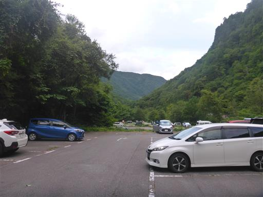
駐車場の奥から遊歩道が整備されており、ほとんど車道を歩く必要はない。
広大な駐車場はガラガラで、このすぐ側に車を停めることができた。
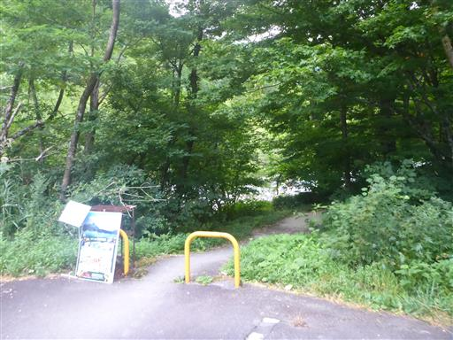
森の中を歩いて新穂高ロープウェイを目指す。
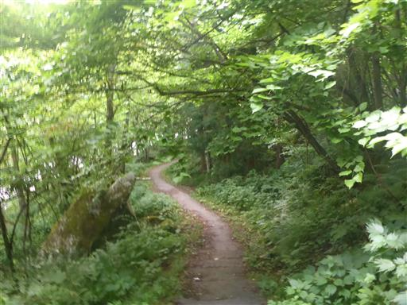
新穂高ロープウェイに到着。台風の影響で本日は運休だ。
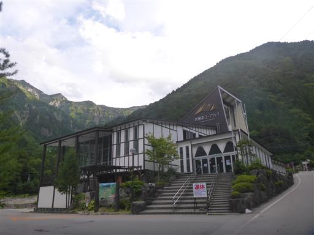
蒲田川に架かる橋を渡って登山開始。
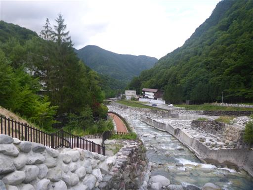
といっても最初は延々続く林道歩きだ。
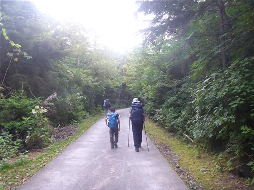
ボロボロの橋。
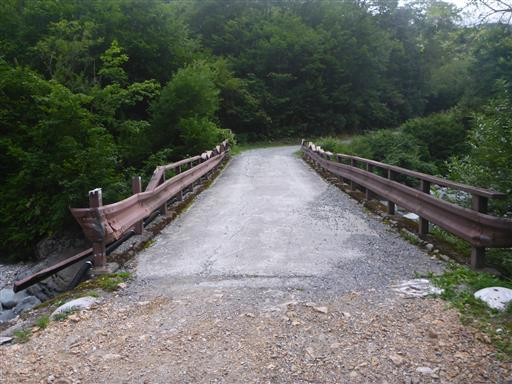
そんな馬鹿なというような注意書き。橋が落ちる危険があるのだろうか？
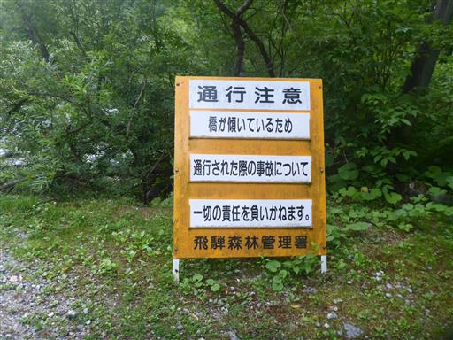
沢は大きな石が散在している。
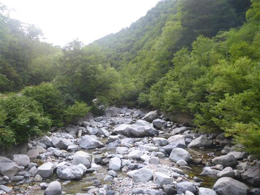
わさび平小屋に到着。
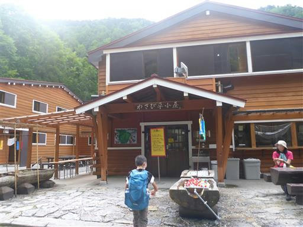
果物や野菜が冷やされている。
なかなか良さそうな小屋で、1日目はここで泊まるというのもありだ。
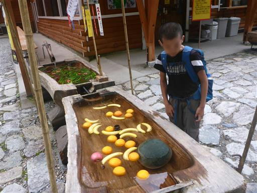
沢沿いの道が続く。河原に立つ一本の枯木が目立っている。
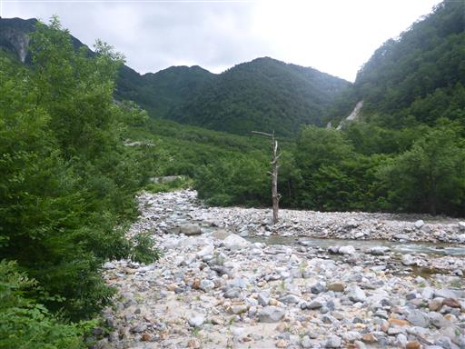
林道が終わってようやく登山開始。
綺麗に石が敷き詰められており、傾斜も緩く一定で、非常に登りやすい。
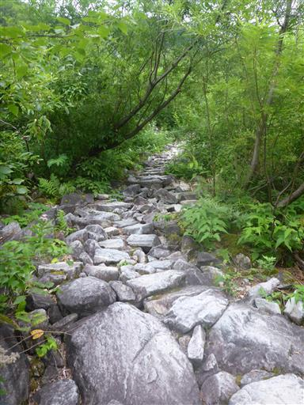
秩父沢を通過。
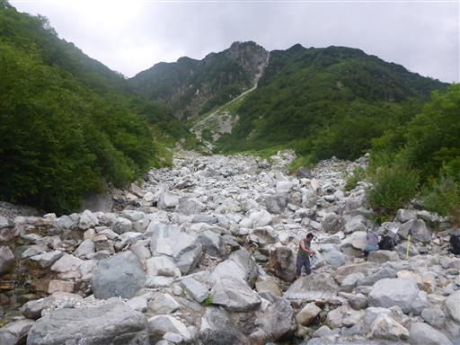
冷たい水が流れている。
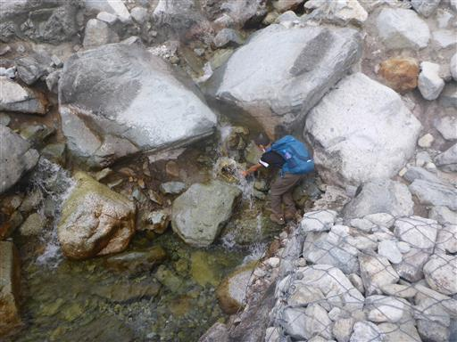
チボ岩。大岩が積み重なっている。
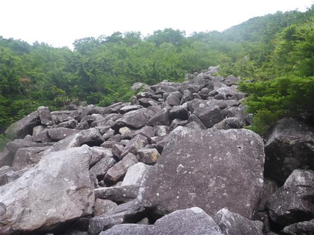
サラシナショウマ。
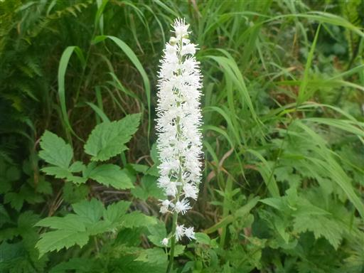
オオレイジンソウ。
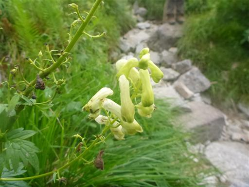
背後に見えているのは抜戸岳。
台風が来ている割には風は穏やかで、意外に展望もある。
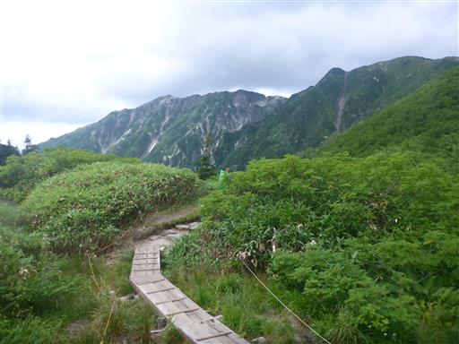
木道を歩く。歩きやすい道が続く。
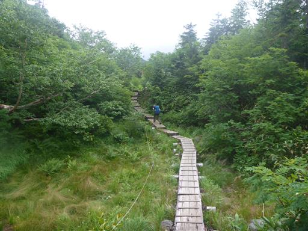
鏡平に到着。

目の前に見えるのは西鎌尾根。
標高の高いところは雲に覆われていて、残念ながら槍ヶ岳は見えない。
休憩するのによい場所なので、ここで昼食をとる。
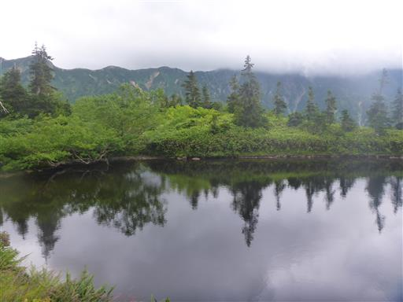
湖畔に咲くオヤマリンドウ。
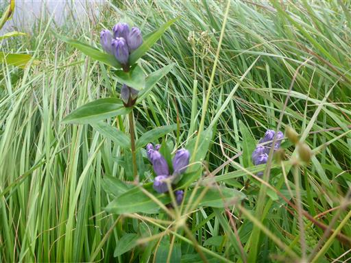
池のすぐ先に鏡平山荘がある。
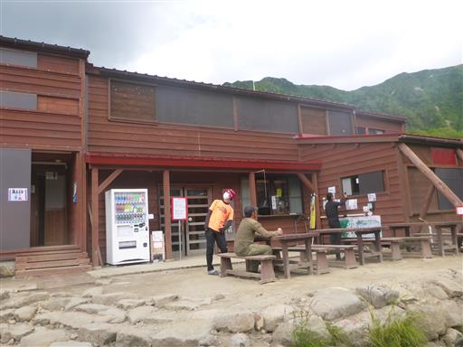
山荘の前にも池があり、風光明媚な場所だ。
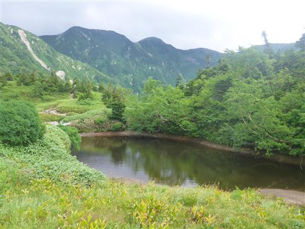
天候次第では鏡平山荘泊も考えたが、雨も風もないので予定通り先に進む。
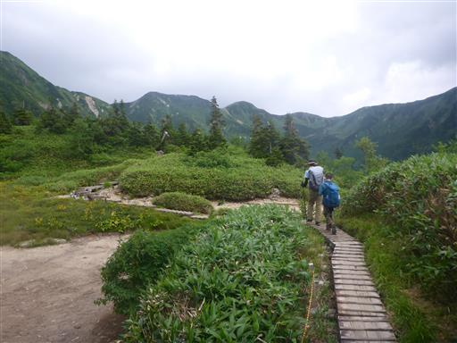
青空も見えているが、尾根には厚い雲がかかっている。

トリカブト、アザミなど秋の花々が見られる。
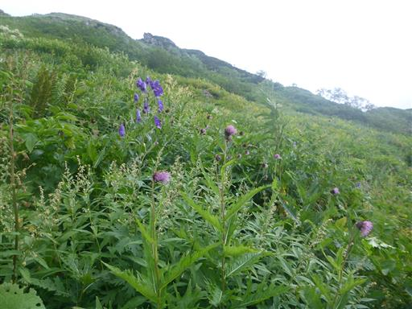
弓折乗越に到着。ここは笠ヶ岳への登山道との分岐点だ。
ここで稜線に出て風が強まるが、歩くのに支障が出るほどではない。
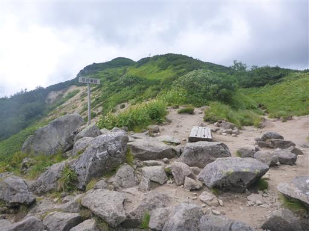
反対側の西側の展望が広がるが、冴えない景色だ。
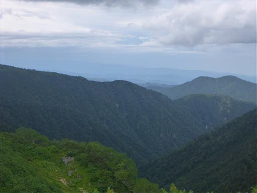
眼下には鏡平山荘が見える。
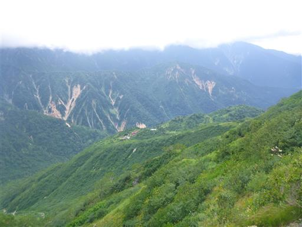
ここからは爽快な稜線歩き。
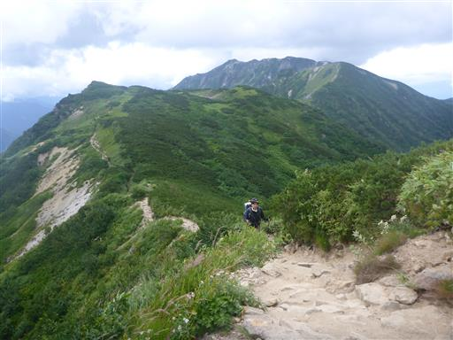
ウメバチソウ。
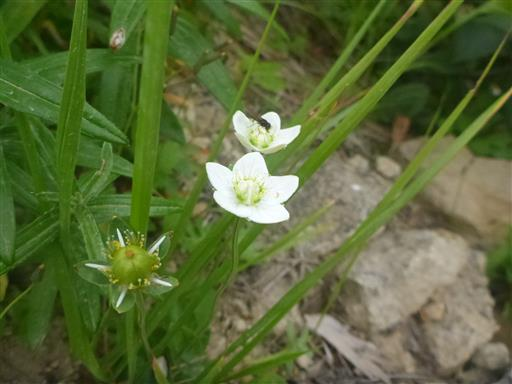
ヤマハハコ。いずれも地味な花だ。
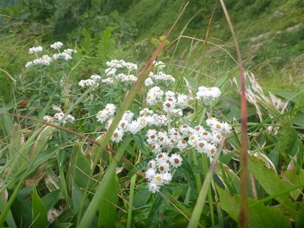
目の前に見えるのは双六岳。明日以降に登る予定だ。
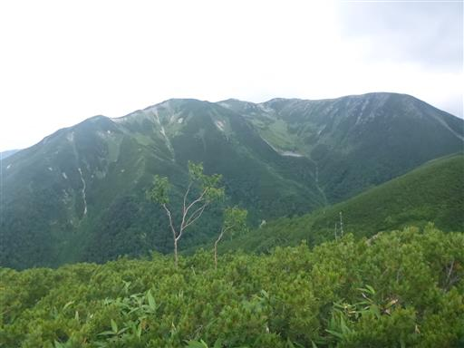
一羽の鳥が風を受けて、同じ場所にとどまっている。
獲物を探しているのだろうか？
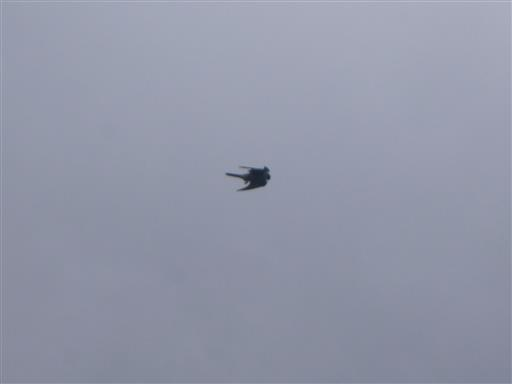
決して天気が良い訳ではないが、ホワイトアウトではなく展望が広がるのがありがたい。
大きな尾根、深い沢、雄大な展望が広がる。
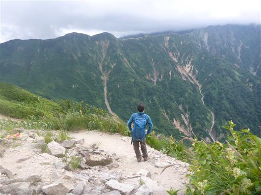
花見平に到着。
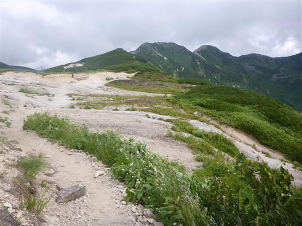
ハクサンフウロ。
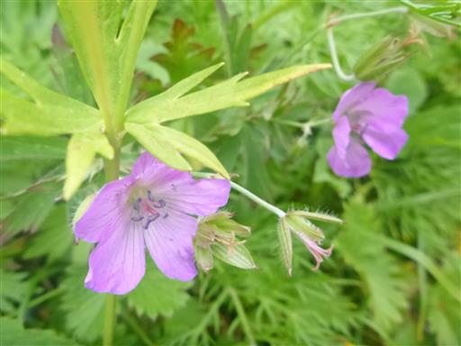
ミヤマリンドウ。鮮やかな青色だ。
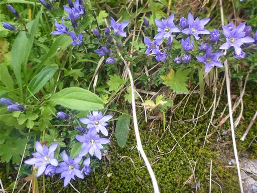
ウサギギク。花見平と呼ばれる場所だけあって、様々な花が咲いている。
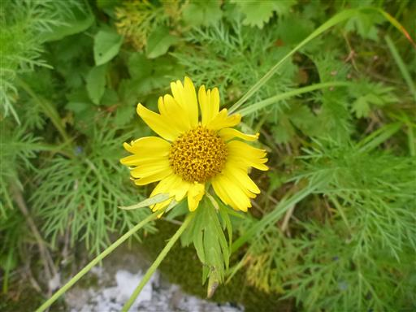
側にある小さな池。中を覗いてみたが、アメンボくらいしか見つからない。
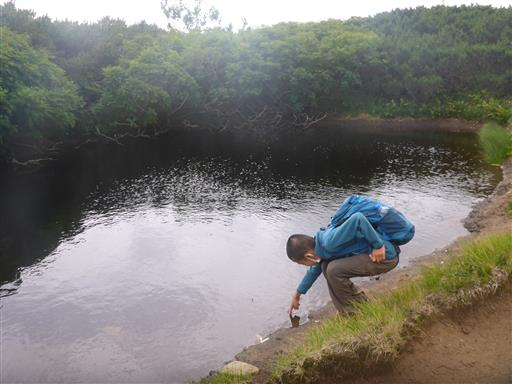
この辺りはハイマツの背が高い。

ナナカマド。赤い実をつけている。紅葉にはまだまだ早い。
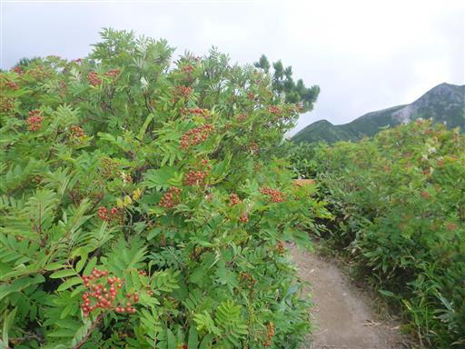
本日の目的地・双六小屋が見えてきた。
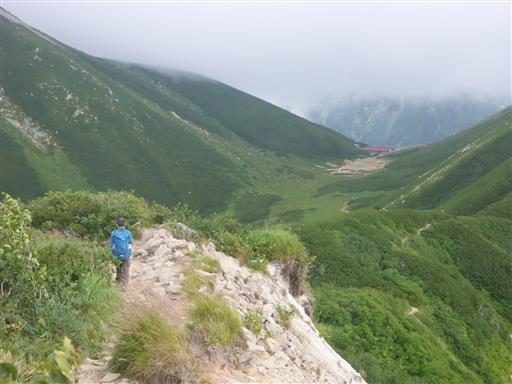
西鎌尾根と深い沢。その先に槍ヶ岳があるはずだ。
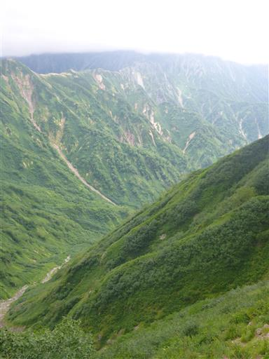
鷲羽岳にかかっていた雲が取れて姿を現す。存在感のある格好良い山だ。
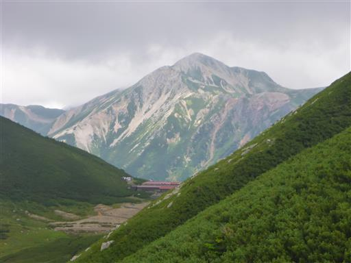
双六山荘前の平地。小屋は良い場所に建っている。
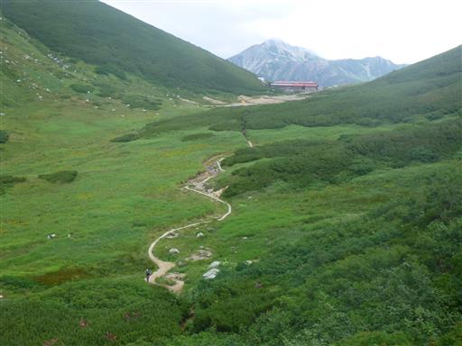
小さな池があちらこちらにある。
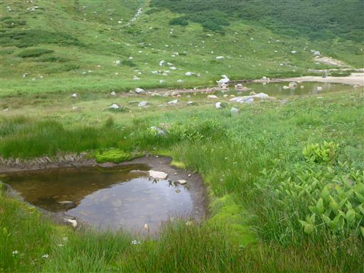
池の畔にはチングルマの綿毛が見られる。
綿毛は何度も見ているが、チングルマの花は長い間見ていない。

振り返ると、抜戸岳の右に笠ヶ岳の姿が見える。
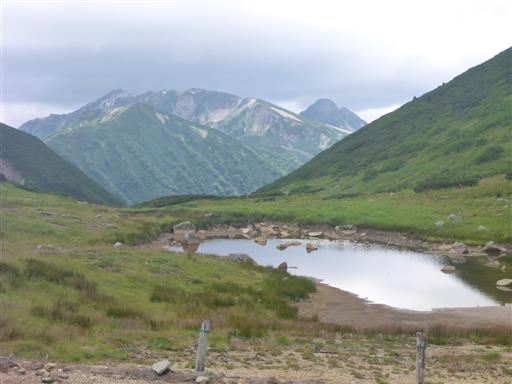
双六小屋に到着。標高2550m。
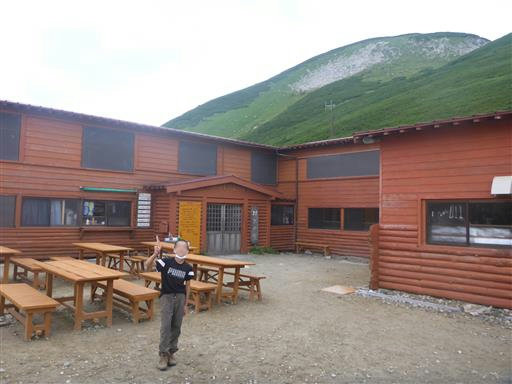
小屋の前からは鷲羽岳を間近に望める。
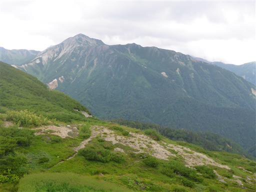
双六小屋内部。サイコロでできた文字が可愛らしい。
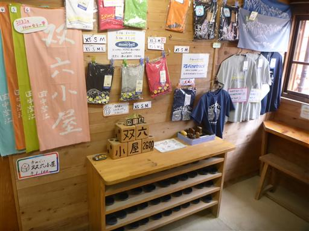
4人部屋のコケモモの部屋を割り当てられる。
台風の影響でほとんどがキャンセル。登山客は十数名でとても快適だ。
まだ13時なので、談話室でのんびりと過ごす。
14時には周辺は雲に覆われて展望は無くなる。
これから天気は崩れる予報だ。